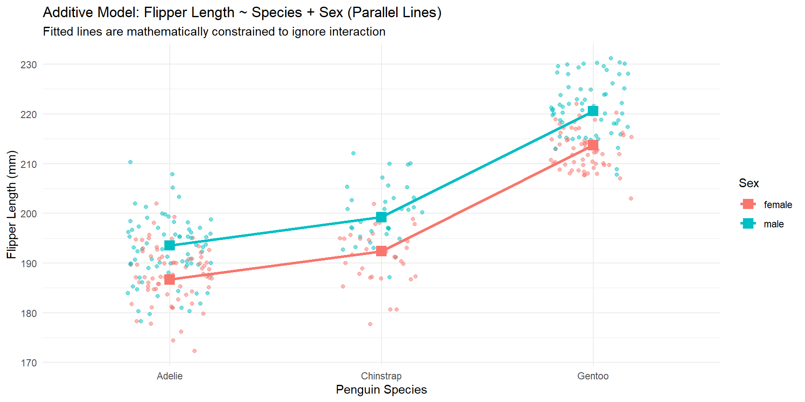
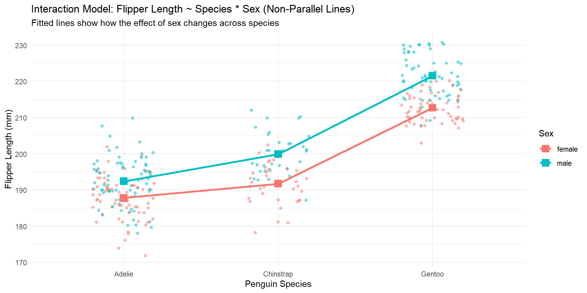
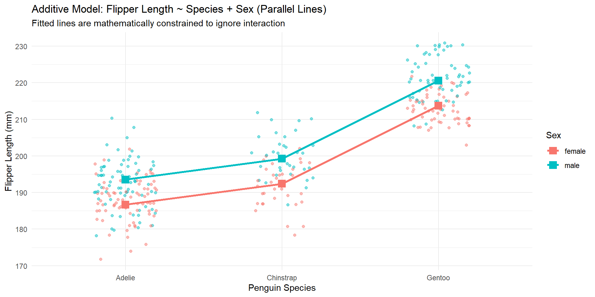
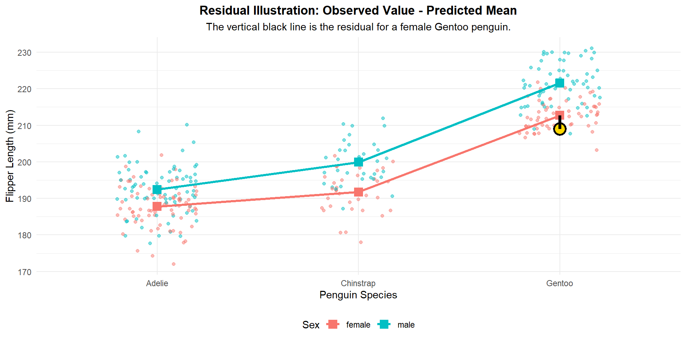
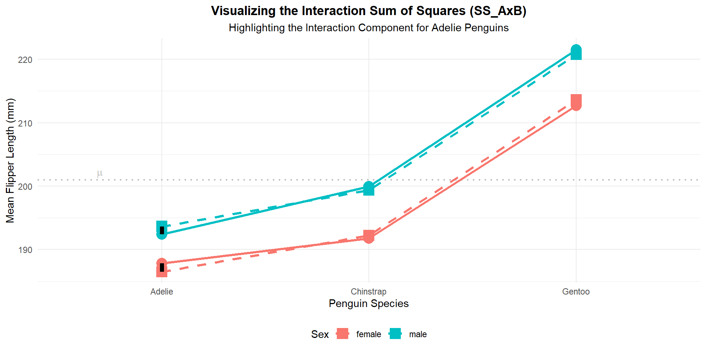
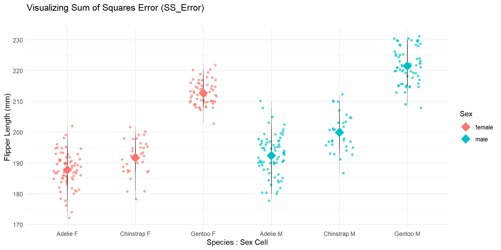

# A tibble: 4 × 3
term estimate std.error
<chr> <dbl> <dbl>
1 (Intercept) 20.0 0.680
2 serviceOvernight -9.13 0.962
3 servicePriority 11.4 0.962
4 serviceStandard 29.7 0.962ST312: Two-way ANOVA (13)
2026-11-05
Checklist
– No homework-3 until next week
– Rubric assignment is out now!
– Don’t forget about the Statistics Experience (12-1)
– Final Exam
> December 3rd 3:30pm in our classroom
> Cumulative with a focus on unit-III– I’m currently grading Exam-2 (~2 week turn around)
Warm-up
A logistics company wants to investigate whether the average delivery time differs among three shipping services.
The company randomly selects 60 packages and assigns them to one of three shipping services:
Service A: Standard ground shipping
Service B: Priority shipping
Service C: Express shipping
Service D: Overnight air freight delivery The company records the number of hours it takes for each package to reach its destination.
Write out the population model in proper notation
Warm-up
Now, write out the estimated model!
Two-way ANOVA
With a quantitative response…
– Difference in means
> single categorical explanatory variable with 2 levels
– One way ANOVA
> single categorical explanatory variable with 2 or more levels
– Two way ANOVA
> two categorical explanatory variables with 2 or more levels!Benefits
– We can “control” or “account” for another variable.
– We can ask and answer more complicated questions.
– Move variation from the residual (error term) to the FIT (model). This helps us understand more about our response variable, and increases the power of our test.
Research Question
Back to the Penguins data set!
I’m interested in if the sex of the penguin can help explain the differences we see if penguins’ flipper length. However, we are going to investigate if the relationship between Species and Flipper length depends on the Sex of the Penguin.
Practice: How is this different then before?
Scenario
# A tibble: 6 × 4
island sex Mean_Flipper_Length N
<fct> <fct> <dbl> <int>
1 Biscoe female 206. 80
2 Biscoe male 213. 83
3 Dream female 190. 61
4 Dream male 196. 62
5 Torgersen female 188. 24
6 Torgersen male 195. 23Response variable: flipper length
Explanatory variables: Species, Sex
Terms
Additive -
Interaction -
Terms
Additive - The relationship between \(X_1\) and \(Y\) does not change based on the levels of \(X_2\)
Additive - The relationship between species and flipper length does not change based on the levels of sex
Terms
Interaction - The relationship between \(X_1\) and \(Y\) DOES change based on the levels of \(X_2\)
Interaction - The relationship between species and flipper length DOES change based on the levels of sex
Additive

Interaction model

The difference
The difference between the Additive Model and the Interaction Model in a Two-Way ANOVA is visually represented on an interaction plot by whether the lines connecting the cell means are parallel or non-parallel.
Additive: The effect of Sex is constant across all levels of Species (the distance within species across sex is the same)
Interaction: The effect of Sex depends across all levels of Species
Research Questions
– We can test for the significance of main effect X1 on Y (given X2 is in the model)
– We can test for the significance of main effect B (given A is in the model)
– We can test for the interaction effect (AB)
Research Questions
– We can test for the significance of main effect species on flipper length (given sex is in the model)
– We can test for the significance of main effect sex on flipper length (given species is in the model)
– We can test for the interaction effect of sex and species on flipper length
Context
Is there an interaction between Species, Flipper Length, and Sex?
Hypotheses
\(Ho:\) The effect of Sex is the same at all levels of factor Species on flipper length at the population level
\(Ha:\) The effect of Sex depends on the levels of Species on flipper length at the population level
Model
Interaction model: \[\mathbf{Y_{ijk} = \mu + \alpha_j + \beta_k + (\alpha\beta)_{jk} + \epsilon_{ijk}}\]
Additive model: \[\mathbf{Y_{ijk} = \mu + \alpha_j + \beta_k + \epsilon_{ijk}}\]
The model terms
| Term | Description | Role in the Interaction Model |
|---|---|---|
| \(Y_{ijk}\) | The \(i^{th}\) observation in the cell defined by level \(j\) of Factor A and level \(k\) of Factor B. | The continuous response variable being measured. |
| \(\mu\) | The mean of the baseline group. | . |
| \(\alpha_i\) | The Main Effect of Factor A at level \(j\). | The deviation of the mean for Factor A (holding B constant) from the baseline. |
| \(\beta_j\) | The Main Effect of Factor B at level \(k\). | The deviation of the mean for Factor B (holding A constant) from the baseline. |
The model terms
| Term | Description | Role in the Interaction Model |
|---|---|---|
| \((\alpha\beta)_{ij}\) | The Interaction Effect for the cell \((i, j)\). | The non-additive effect specific to that combination of factor levels. This is the core term that distinguishes the interaction model. |
| \(\epsilon_{ijk}\) | The Random Error term. | The unexplained, random variation, assumed to be \(\sim N(0, \sigma^2)\). |
Write out the estimated models
Additive model
# A tibble: 4 × 5
term estimate std.error statistic p.value
<chr> <dbl> <dbl> <dbl> <dbl>
1 (Intercept) 187. 0.568 328. 0
2 speciesChinstrap 5.72 0.841 6.80 4.79e- 11
3 speciesGentoo 27.0 0.707 38.2 4.08e-123
4 sexmale 6.85 0.628 10.9 7.11e- 24Visually

Write out the estimated models
Interaction model
# A tibble: 6 × 5
term estimate std.error statistic p.value
<chr> <dbl> <dbl> <dbl> <dbl>
1 (Intercept) 188. 0.662 284. 0
2 speciesChinstrap 3.94 1.17 3.36 8.84e- 4
3 speciesGentoo 24.9 0.995 25.0 4.93e-78
4 sexmale 4.62 0.936 4.93 1.30e- 6
5 speciesChinstrap:sexmale 3.56 1.66 2.14 3.28e- 2
6 speciesGentoo:sexmale 4.22 1.40 3.02 2.74e- 3Hypotheses
We now want to test to see if the more complicated model is worth it (is there an interaction present)
\(H_0: (\alpha\beta)_{jk} = 0 \text{ for all } j \text{ and } k\)
\(H_a: (\alpha\beta)_{ij} \neq 0 \text{ for at least one pair of } (j, k)\)
where i = Adelie, Chinstrap, and Gentoo
where j = Male, Female
Assumptions
– Independence
– Normality or residuals
– Equal Variance
Residuals
Observed - Predicted still applies!

Normality of residuals

Equal Variance

Our statistic
Variance between vs variance within
Because we are testing the interaction term, the between is the interaction term vs the additive terms
\[F_{A \times B} = \frac{MS_{A \times B}}{MS_{Error}}\]
\[MS_{A \times B} = \frac{SS_{A \times B}}{df_{A \times B}}\]
SS measures how much the mean of a specific combination of variables deviates from the mean predicted by the simple additive model.
SS axb
Look at the difference between the predicted mean in the additive model vs the actual mean (interaction model)
Take the values, square them, and sum them up!

Statistic
\[MS_{A \times B} = \frac{SS_{A \times B}}{df_{A \times B}}\]
\[\mathbf{df_{A \times B} = (a - 1)(b - 1)}\]
a is the number of levels for A b is the number of levels for B
Statistic (MSE)
\[F_{A \times B} = \frac{MS_{A \times B}}{MS_{Error}}\]
\[\mathbf{MS_{Error} = \frac{SS_{Error}}{df_{Error}}}\]
\[\mathbf{SS_{Error} = \sum_{i=1}^{a} \sum_{j=1}^{b} \sum_{k=1}^{n} (Y_{ijk} - \bar{Y}_{ij})^2}\]
\[\mathbf{df_{Error} = ab(n - 1)}\]
Visually
\[\mathbf{SS_{Error} = \sum_{i=1}^{a} \sum_{j=1}^{b} \sum_{k=1}^{n} (Y_{ijk} - \bar{Y}_{ij})^2}\]

Questions?
Results
Df Sum Sq Mean Sq F value Pr(>F)
species 2 50526 25263 789.912 < 2e-16 ***
sex 1 3906 3906 122.119 < 2e-16 ***
species:sex 2 329 165 5.144 0.00631 **
Residuals 327 10458 32
---
Signif. codes: 0 '***' 0.001 '**' 0.01 '*' 0.05 '.' 0.1 ' ' 1What is the distribution our F-statistic follows?
Distribution
F-distribution
\[\mathbf{df_{A \times B} = (a - 1)(b - 1)}\]
\[\mathbf{df_{Error} = ab(n - 1)}\]
What does this tell us?
– Reject the null hypothesis
– Strong evidence to conclude that the relationship between Species and Flipper Length does depend on the Sex of the Penguin.
Next time
Test for the main effects